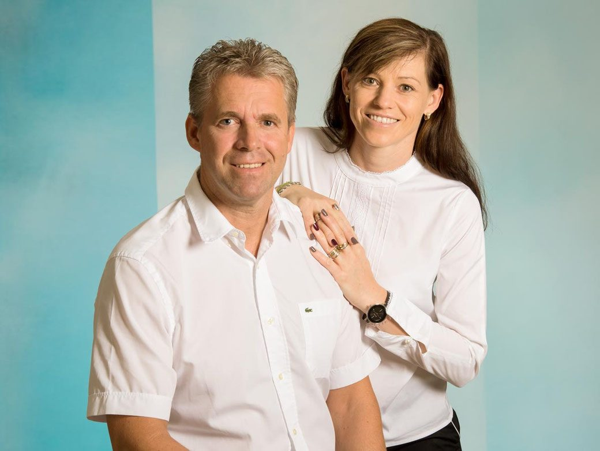
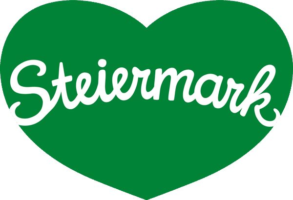
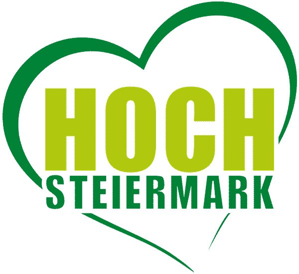

Zwei Häuser,
ein Hof, viel Wald.
In der prächtigen Landschaft des Mürztals nicht weit von Kapfenberg betreiben wir unsere zwei Lokale: den Bergerbauer und den Prieselbauer. Umgeben von Wald und doch in der Stadt können Sie bei uns die Ruhe und die Natur genießen.
Wir freuen uns, Sie gemeinsam mit unserem Team aufs Köstlichste bewirten zu dürfen.
Herzlichst, Ihre Familie Haubenwaller

Bergerbauer
Gasthaus-Pension mit Restaurant für bis zu 140 Personen, Gastgarten, Laube, Gewölbekeller, Vinothek, zehn Zimmern und Swimmingpool.
- Geöffnet
- Mi, Do, Sa, So ab 10:30
- Küche
- 11:00 – 19:30, letzte Bestellung 19:00
- Telefon
- +43 3862 31 258
Prieselbauer
Urige Einkehr auf rund 10 Hektar Areal: Sonnenterrasse mit Ausblick über das gesamte Mürztal, Tiergehege, Streichelzoo und großer Busparkplatz.
- Geöffnet
- ganzjährig Fr bis Mo ab 10:30
- Küche
- 11:00 – 19:30, letzte Bestellung 19:00
- Telefon
- +43 664 525 39 74
Mitten im Herzen der Steiermark, in einer der waldreichsten Regionen Europas
Umgeben von Waldwegen und doch in der Stadt liegen unsere beiden Lokale. Stellen Sie das Auto ab und genießen Sie einen erholsamen Urlaub in unserem Familienbetrieb, den wir bereits in dritter Generation führen.
Überzeugen Sie sich selbst von der gemütlichen Atmosphäre in unseren Häusern – in der Laube, im Gastgarten oder im urigen Gewölbekeller. Unsere Vinothek lädt zum Probieren von so manch edlem Tröpferl ein.
Ein Streichelzoo, ein Tiergehege und ein großer Kinderspielplatz bieten auch unseren kleinen Gästen einen erlebnisreichen Aufenthalt. Wanderer und Mountainbiker kommen bei uns voll auf ihre Rechnung. Ein großer Parkplatz beim Prieselbauer bietet sich auch für Busse hervorragend an.
- Gute Steirische Gaststätte
- Familienfreundlicher Betrieb
- Mitglied Steirisches Wirtshaus
- Alljährlicher Blumenschmuck

Sechs gute Gründe für einen Ausflug

Steirische Küche
Traditionelle steirische Gerichte, großteils aus Lebensmitteln von Landwirten aus der Region bzw. aus Österreich.
Zum Bergerbauer
Sonnenterrasse & Gastgarten
150 Sitzplätze auf der Sonnenterrasse beim Prieselbauer, 200 Plätze im Gastgarten beim Bergerbauer.
Zum Prieselbauer
Zehn Zimmer & Pool
Ruhige Zimmer mit Dusche, WC, TV und freiem Internet-Zugang, dazu Swimmingpool und Liegewiese.
Zimmer & Preise
Feiern bis 100 Gäste
Geburtstag, Sponsion, Taufe, Firmung, Hochzeit oder Weihnachtsfeier – in beiden Häusern mit individuellem Angebot.
Feiern & Veranstaltungen
Vinothek im Gewölbe
Der urige Gewölbekeller lädt zum Probieren von so manch edlem Tröpferl ein.
Vinothek ansehen
Tiere, Spielplatz, Go-Kart
Streichelzoo und Wildtiergehege beim Prieselbauer, Spielplatz und Kinder-Go-Kartbahn beim Bergerbauer.
Für FamilienWas Gäste im Netz sagen
Wir zitieren hier bewusst keine einzelnen Stimmen – die Bewertungen stehen bei Google und Tripadvisor für sich.
Tische bitte telefonisch
Wir bitten Sie, Tischreservierungen sowohl beim Bergerbauer als auch beim Prieselbauer bis auf weiteres nur telefonisch vorzunehmen. Wir danken für Ihr Verständnis.
Zimmeranfragen nehmen wir gerne auch über das Online-Formular entgegen.
Hochsteiermark rund um Kapfenberg
Wander- und Radwegenetz direkt vor der Tür, die Burg Oberkapfenberg aus dem Jahr 1328 und der Wulfingweg als Panorama-Rundweg für die ganze Familie.


Ein Blick in beide Häuser
Auf einen Sprung vorbeischauen?
Rufen Sie an, wir halten Ihnen einen Tisch frei – in der Stube, in der Laube, im Gastgarten oder auf der Sonnenterrasse.